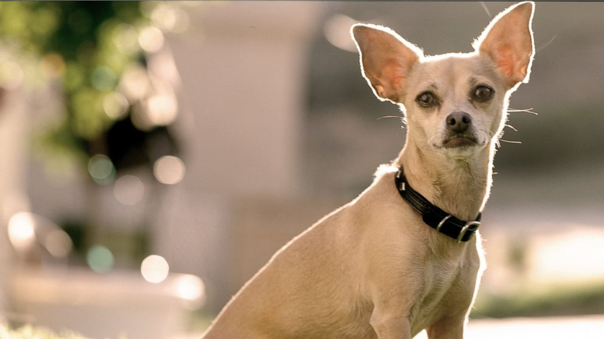
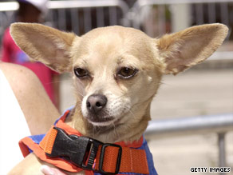

The Taco Bell Dog
In September 1997, Taco Bell used the dog in one advertisement in the Northeastern United States. The advertising campaign began during a peak in the "Burger Wars," in which several fast food chains were engaged in large advertising campaigns against each other. The dog was made to speak through special effects. Her advertising catchphrase was "¡Yo quiero Taco Bell!" ("I want Taco Bell!"). Her voiceover was provided by Carlos Alazraqui,[2] who says that the voice is a cross between Hungarian-born actor Peter Lorre (The Maltese Falcon) and Ren Höek, the cartoon Chihuahua of The Ren & Stimpy Show, with a touch of Anthony Quinn from Requiem for a Heavyweight.
See Him in Action!

